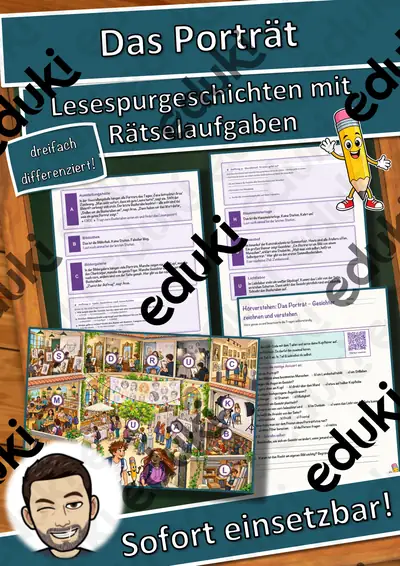
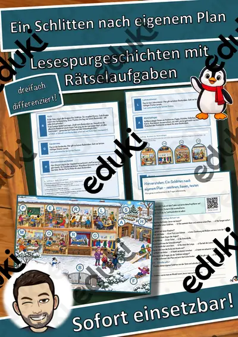

Fundbüro der Gesichter: Personen beschreiben und Suchmeldungen schreiben – Deutsch Klasse 5–6
Fundbüro der Gesichter: Personen beschreiben und Suchmeldungen schreiben – Deutsch Klasse 5–6, 3 Niveaus, Wortspeicher, Tippkarten, Test52 Seiten.
Personen genau beschreiben: eine eigene Schreibreihe im Rahmen „Fundbüro der Gesichter“. Die Klasse arbeitet als Zeichner-Redaktion und schreibt Suchmeldungen.
Sechs Kapitel mit je drei Arbeitsblättern in 3 Niveaus: Gesamteindruck, Haare, Gesicht, Kleidung, sachlicher Stil mit richtiger Reihenfolge und Personenreihe.
Dazu: Adjektiv-Speicher, 24 Wortkarten, 12 Tippkarten, Schreibplan, Satzbausteine, Checkliste, Partnerbogen, Selbsteinschätzung, Zeichner-Duell, 11 Personenkarten und 12 Rätselkarten.
Abschlussaufgabe mit Suchmeldung und Steckbrief, Test mit Erwartungshorizont, Notenvorschlag, Lehrerinfo mit Planung und alle Lösungen.
Alle Personen sind gezeichnete Figuren; jede Aufgabe ist eindeutig lösbar.
Ähnliche Materialien

Adjektiv Lückentext mit Wortspeicher Hörverstehen und Suchsel

Lesespur: Das Porträt: Gesichter zeichnen und verstehen – Lesespurgeschichte mit Rätseln (Klasse 7)

Wichtel beschreiben: Schreibanlass mit 4 Wichtelbildern, Wortspeicher und Checkliste (Klasse 3–4)

Lesespur: Datenbanken: Ordnung im Fundbüro – Lesespurgeschichte mit Rätseln (Klasse 10)

Datenflussdiagramme zeichnen und lesen – Arbeitsheft mit Lösungen (IT 6/7, Realschule Bayern)

Lesespur: Masken gestalten: Gesichter verwandeln – Lesespurgeschichte mit Rätseln (Klasse 5)

Lesespur: Ein Schlitten nach eigenem Plan: zeichnen, bauen, testen – Lesespurgeschichte mit Rätseln (Klasse 3)